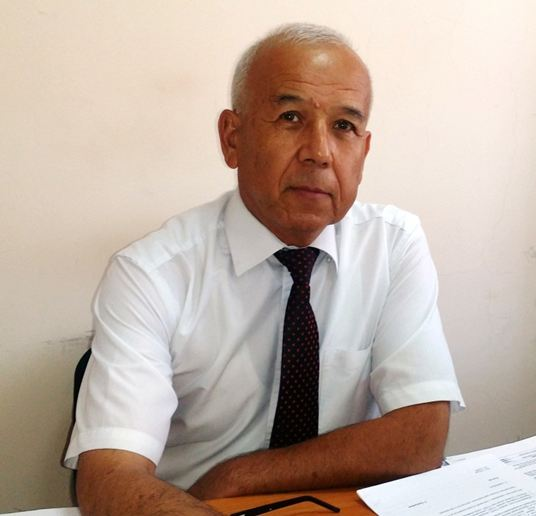

|  | Head of department Ganiyev Abduxalil Abdujalilovich
Everyday, time 2 p.m - 4 p.m
|


About department
"Information Security" (formerly "Information Security") was organized in September, 2006 under the supervision of professor MMKarimov, "Information Security", for the purpose of training highly qualified specialists in the direction of education and magistracy specialties, In 2010, the head of the department was professor MMKarimov, docent S.Yu.Yusupov.In the department development and development of educational-methodical and scientific-research works of prof. MMKarimov, senior teachers DGAbdullayev, KATashev made a considerable contribution.
On September 3, 2013, Dr. Durdona Yakubjanovna Irgasheva was appointed as the Head of the Department.
For a number of years, the Department has been teaching professors and teachers of magistracy for "Internet Security", "Digital Criminology", "Applied Cryptanalysis Methods", "Information Security", "Information Theory and Coding", "Information Security in Computer Systems and Networks" , "Cryptography Methods", "Information Security in Wireless Networks", "Cryptographic Protocols." There are several lecture texts by professors in the department, In 2008, SKGaniev, MMKarimov, KATashev published an educational manual titled "Information Security" in Cyrillic and Latin alphabets.

At the department is co-ordinated by the Committee for Coordination of Science and Technology Development, as well as practical and fundamental projects financed by the Ministry of Information Technologies and Communications of the Republic of Uzbekistan, including 3 fundamental, 2 practical and 2 Based on the contract, the average annual turnover is $ 200 million. The research works on creation of methods and means of information protection in information-communication systems are conducted. A large group of senior researchers and independent researchers prepare their doctoral dissertations on issues related to this research. In 2014, OUkholmuradov and AAVorisov graduated from the Institute of Senior Researchers, nowadays AAAbdurahmanov and NBNasrullayev, professors of the department, are the 1st and 2nd stages of the Institute of Senior Researchers, as well as independent researchers D.Ya. Irgasheva, KATashev and Sh.R. Gulyamov are conducting research on their doctoral dissertations. In accordance with Decision # 1 (661) of August 29, 2016 of the Council of Tashkent University of Information Technologies, the department of "Computer Engineering" "The new" Information Security "faculty was established on the basis of the department and the Department of Information Security was transformed into the Department of" Information Security ".
Nowadays, 1 professor, 4 associate professors, 1 senior teacher, 8 assistants, 3 teachers are trained on pedagogical and scientific researches. Professors and teachers of the department prepared 14 workbooks and lectures on the subject. At the department students are trained 5330500 - Computer Engineering (Information Security) and 5330300 - Information Security ("Information, Communication Technologies and Service").
Zokirov Odiljon Yoqibjon o'g'li, senior researcher-researcher of the institute, as well as D.Ya.Irgasheva, K.A.Tashhev and Sh.G.Gulomov are conducting research on doctoral dissertations as independent researchers.
LIST OF FUNDAMENTAL, PRACTICAL AND INNOVATIVE
PROJECTS FOR THE DEPARTMENT OF "INFORMATION SECURITY"
- BV-F4-023 "Investigation of incidents and cyberbullying control problems in distributed information and communication systems"
- Ganiev S.K. - Project Manager
- № А5-063 «Development of complex method of inter-sectoral screening and monitoring in information communication systems»
- Ganiev S.K. - Project Manager
- № А5-061 "Improving the system of the" electronic government "on the basis of effective single identification technology"
- Kuchkarov T.A. - Project Manager